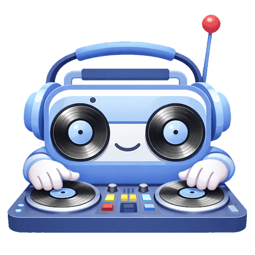
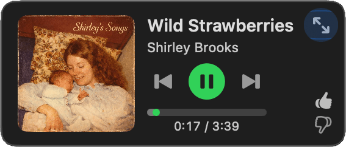
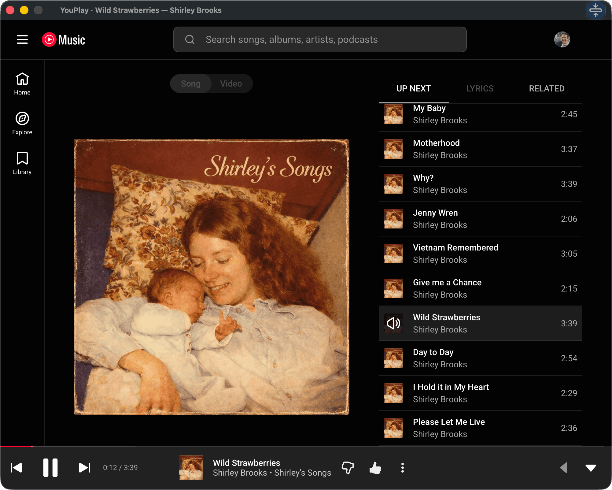

Mixlet
A mini player for YouTube Music on macOS.
Small, focused, and a little better than living in a browser tab.
Why Mixlet?
It’s like Safari’s Add to Dock for music.youtube.com, but a bit sharper and a lot more fun.
- Mini: The mini player is king, not an afterthought.
- Mix It: Press ⌘G to generate a mix from the playing song.
- Resume: Picks up at the exact song and timestamp.
- Fast: Native media keys, shortcuts, and menus.
- Offline: Play downloaded tracks when offline.

Full Web View, Too
- Private: Runs in WebKit with macOS sandboxing, so Mixlet never sees your Google/YouTube credentials.
- Complete: Playlists, search, and sign‑in—just like YouTube Music on web and mobile.

Keyboard Shortcuts
For the keyboard‑first crowd (and us lazy folk who refuse to open the Playback menu), here they are.
- Play/PauseSpace
- Play/Pause (K)K
- Next Track⇧⌘▶
- Previous Track⇧⌘◀
- Like ⌘.
- Generate Mix from Song ⌘G
- Open Current Album⇧⌘A
- Toggle Mini/Full⇧⌘M
- Toggle Mini/Full (T)T
- Mini Player ⌘1
- Full Player ⌘2
FAQ
- Is Mixlet free?
- Yes. Free forever. No subscriptions, no in‑app purchases, no tricks.
- How do I log in?
- Use your Google email and password in the full web view (⌘2). Passkeys and autofill aren't available: that's an Apple embedded WebKit limitation, not Mixlet.
- Do I need YouTube Premium?
- No, but YouTube Premium is the cheat code. You get ad‑free YouTube and YouTube Music included, which is a good deal. You also get offline playback. This is exactly how I run instead of paying for a separate music service: huge catalog, solid recommendations, and a genuinely good iOS app. Mixlet basically exists because this bundle is so good I wanted a tiny Mac mini player to match.
- What doesn't work when logged out?
- Generate Mix (⌘G), Like (⌘.), Open Current Album (⇧⌘A), and song resume are disabled when you're not signed in. YouTube Music's logged‑out mode has limited queue support, so these features can't work reliably. Sign in with your free Google account to unlock everything.
- How do I contact support?
- Write to support@mixlet.app. If Mixlet misbehaves, I want the juicy details.
- Is my data safe?
- Mixlet runs inside Apple's sandboxed WebKit. Your Google credentials never leave WebKit, so Mixlet cannot see them. See the Privacy Policy.
- What about playlists and search?
- Expand to the full player (⌘2). It's the real YouTube Music web app—playlists, library, search, everything.
- Which macOS versions does Mixlet support?
- macOS 14 Sonoma or newer. Sorry to the vintage Mac legends. Mixlet uses newer Swift/WebKit magic, and supporting every old version would summon a cursed spaghetti code goblin.
- Is there an iOS version?
- Nope. macOS only. YouTube Music already has a perfectly good iOS app.
- How does AirPlay work?
- On macOS Tahoe (26) and later, tap the AirPlay icon on the mini player to route audio for Mixlet alone. This barely works due to sandboxing limitations but it can be useful. If you really care about audio routing (Bluetooth speakers, Sonos, etc.), use System Settings → Sound or a tool like Airfoil or SoundSource from Rogue Amoeba (their apps are amazing).
- Is this a Google thing?
- No. Mixlet is an independent Mac app that wraps YouTube Music's web player. I'm not affiliated with Google, and Google does not endorse Mixlet. If that's ever a problem, I'll take it down. No hard feelings. For data handling details, see the Privacy Policy.
- Can I play music offline?
- Yes, if you have YouTube Premium, are already signed in, and previously downloaded music in Mixlet’s full view. You can find music you have already saved in Library → DOWNLOADS.